Turismo Nacional.
En esta pagina te recomendaremos excursiones en Argentina.
Bienvenido a nuestra página de turismo, el destino perfecto para explorar y descubrir experiencias únicas en todo el mundo. Nuestro objetivo es brindarte toda la información necesaria para que planifiques tu próximo viaje de manera fácil y emocionante. En nuestra página encontrarás una amplia variedad de destinos turísticos, desde fascinantes ciudades cosmopolitas hasta impresionantes paisajes naturales. Cada destino está cuidadosamente seleccionado para ofrecerte una experiencia inolvidable.
Monte Fitz Roy
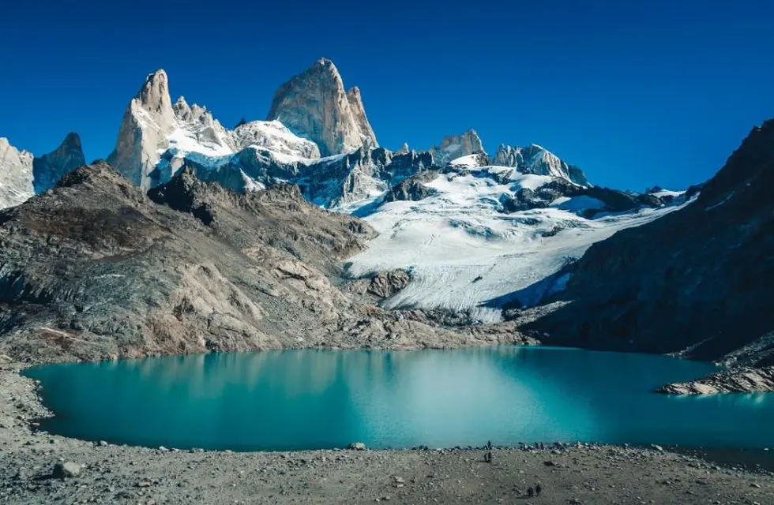Cataratas del Iguazú
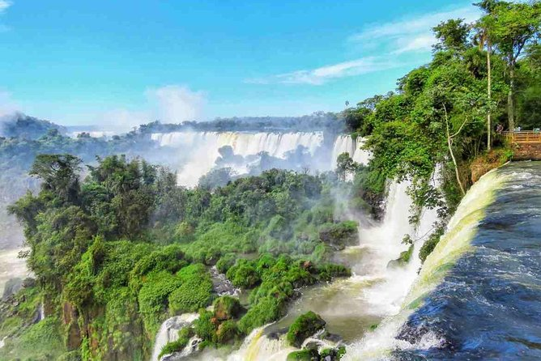Glaciar Perito Moreno
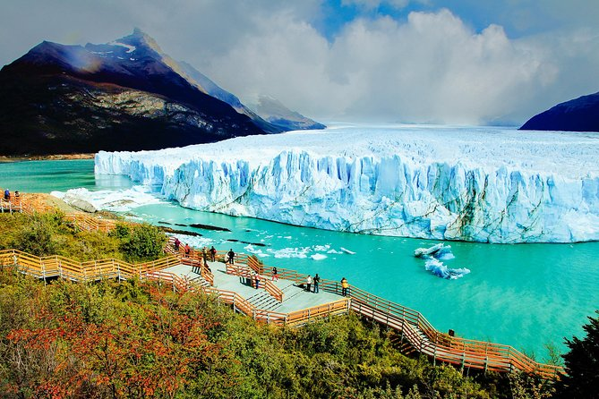Península Valdés desde Puerto Madryn
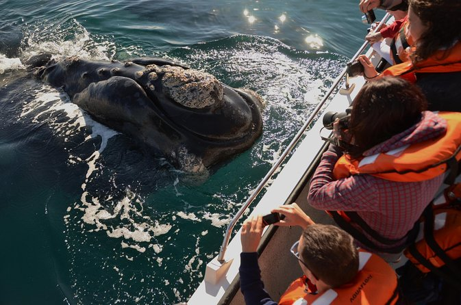Lago del Desierto, Santa Cruz
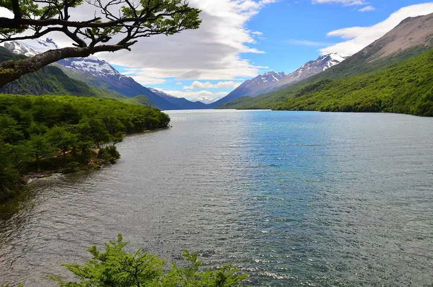Lago Puelo, Chubut
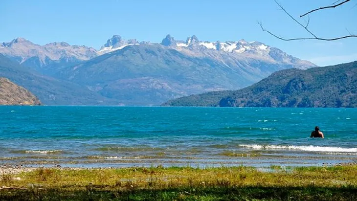Quebrada del condor
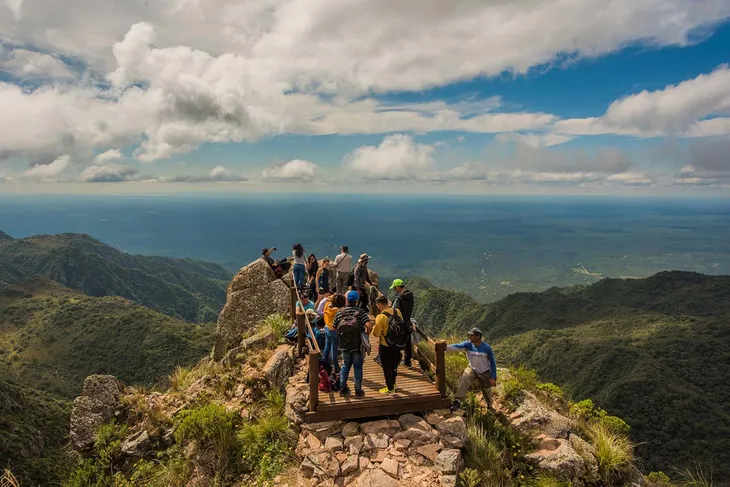Termas rio jordan
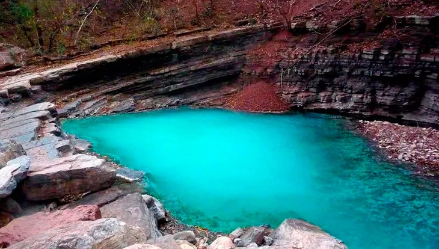A continuación les mostraremos una galería con paisajes de Argentina.
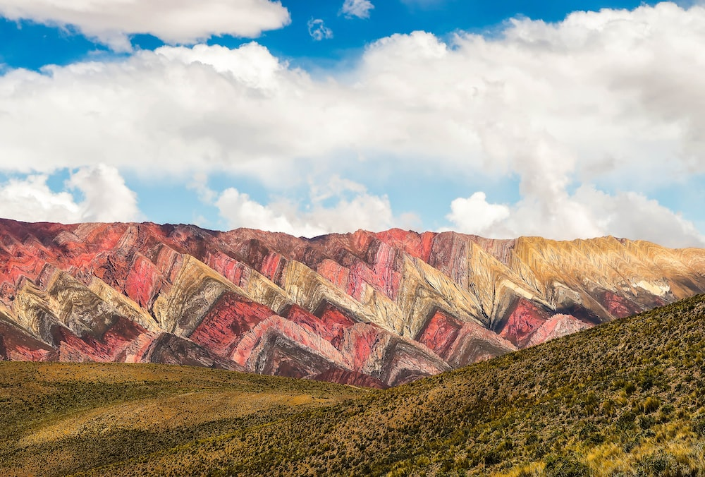
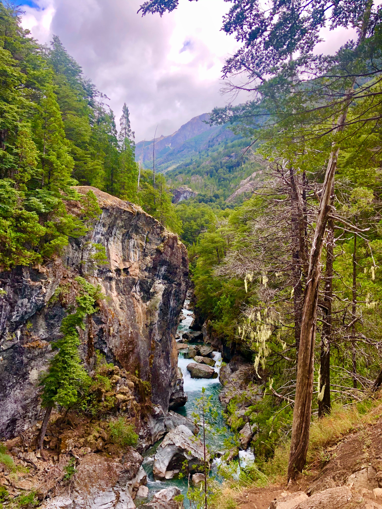
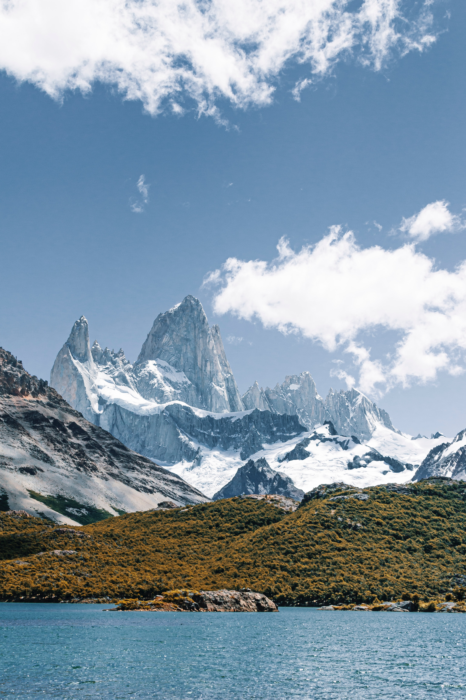
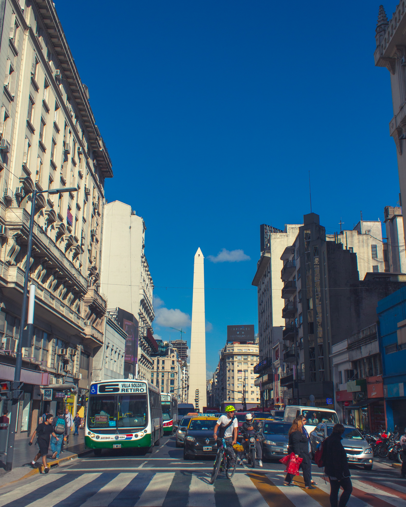
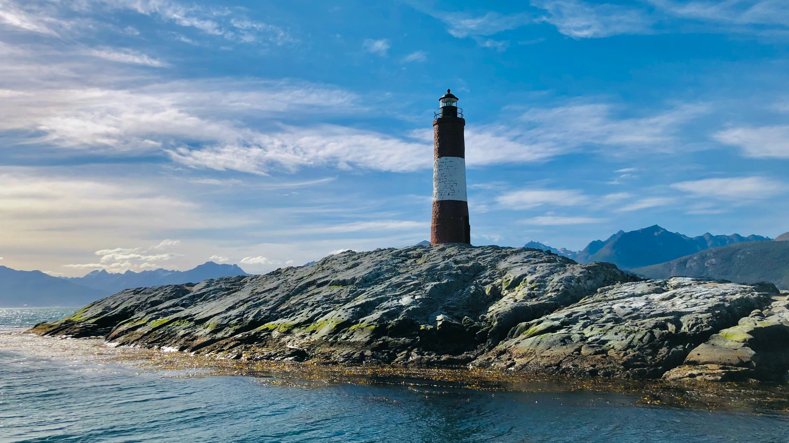
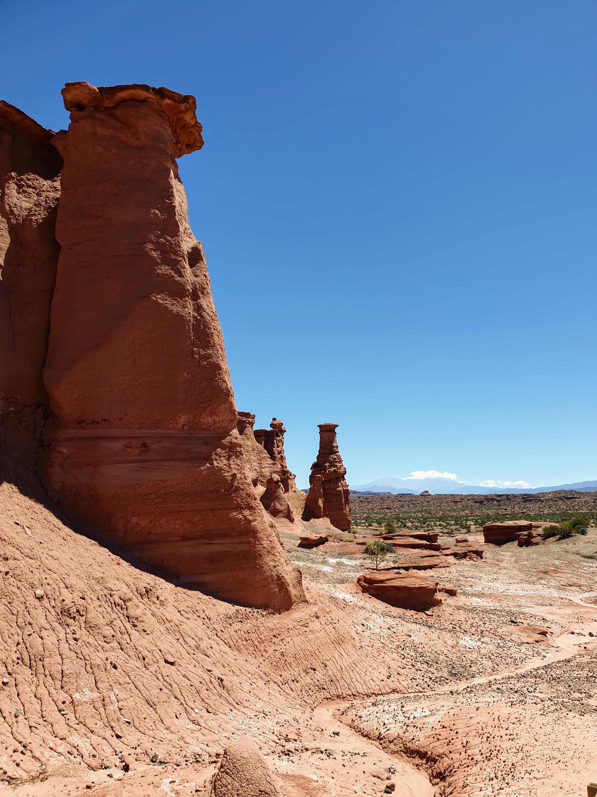
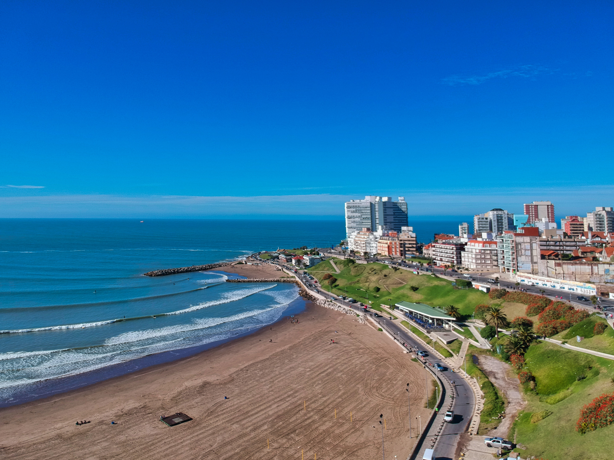